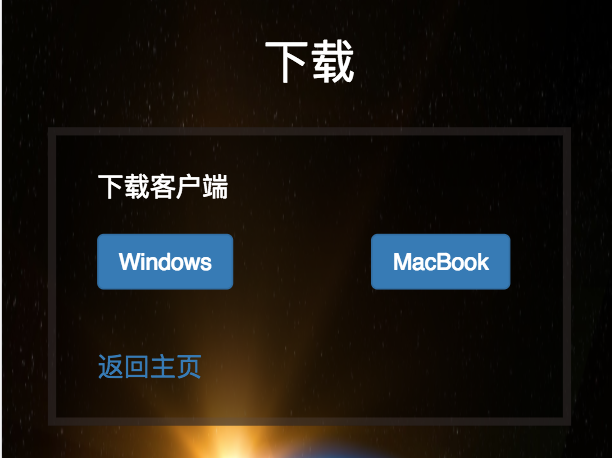
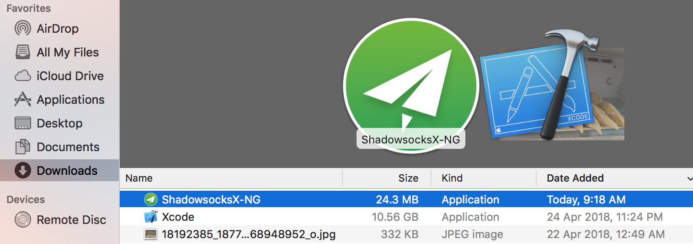
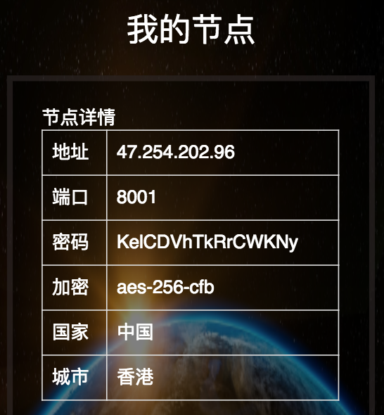
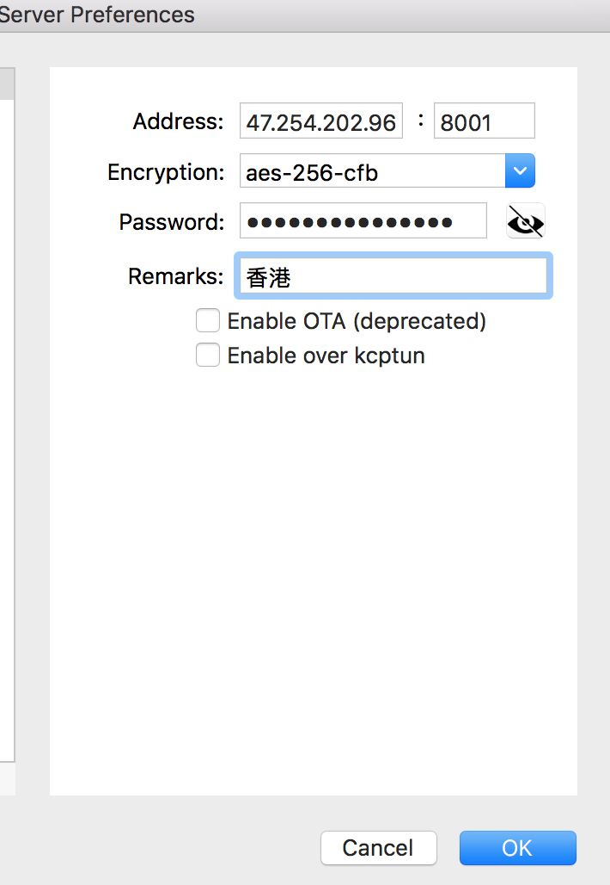
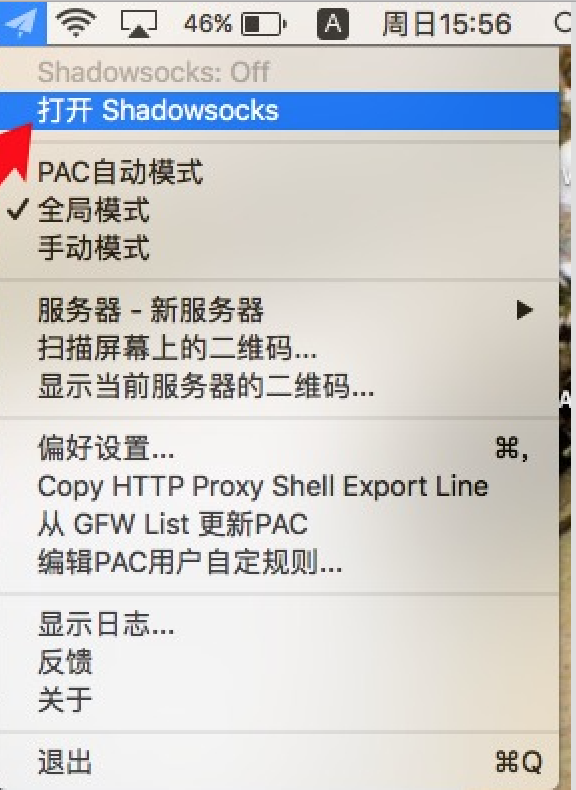

第一步：从主页下载ShadowSocks

第二步：从下载中心(Downloads)拖动Shadowsocks-NG到
应用中心(Applications)

10.12.0以上的版本需要在控制台窗口(Terminal)执行以下命令
chmod +x /Applications/ShadowsocksX-NG.app/Contents/Resources/ss-local
第三步：查看个人中心 -> 我的节点

第四步：选择服务器 -> 服务器设置，将信息录入ShadowSocks

第五步：连接VPN，连接成功后会有一个G的标识

返回主页